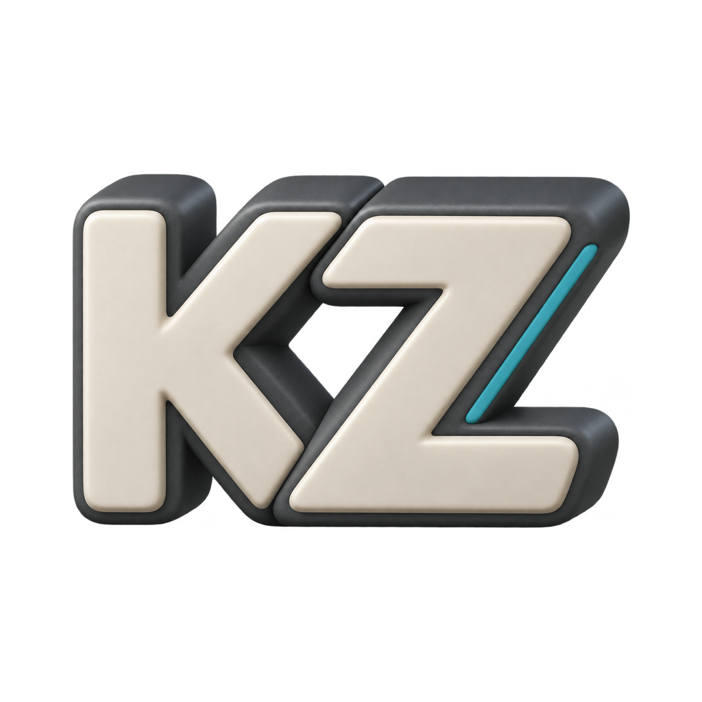
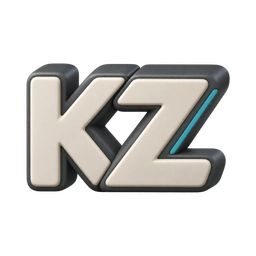
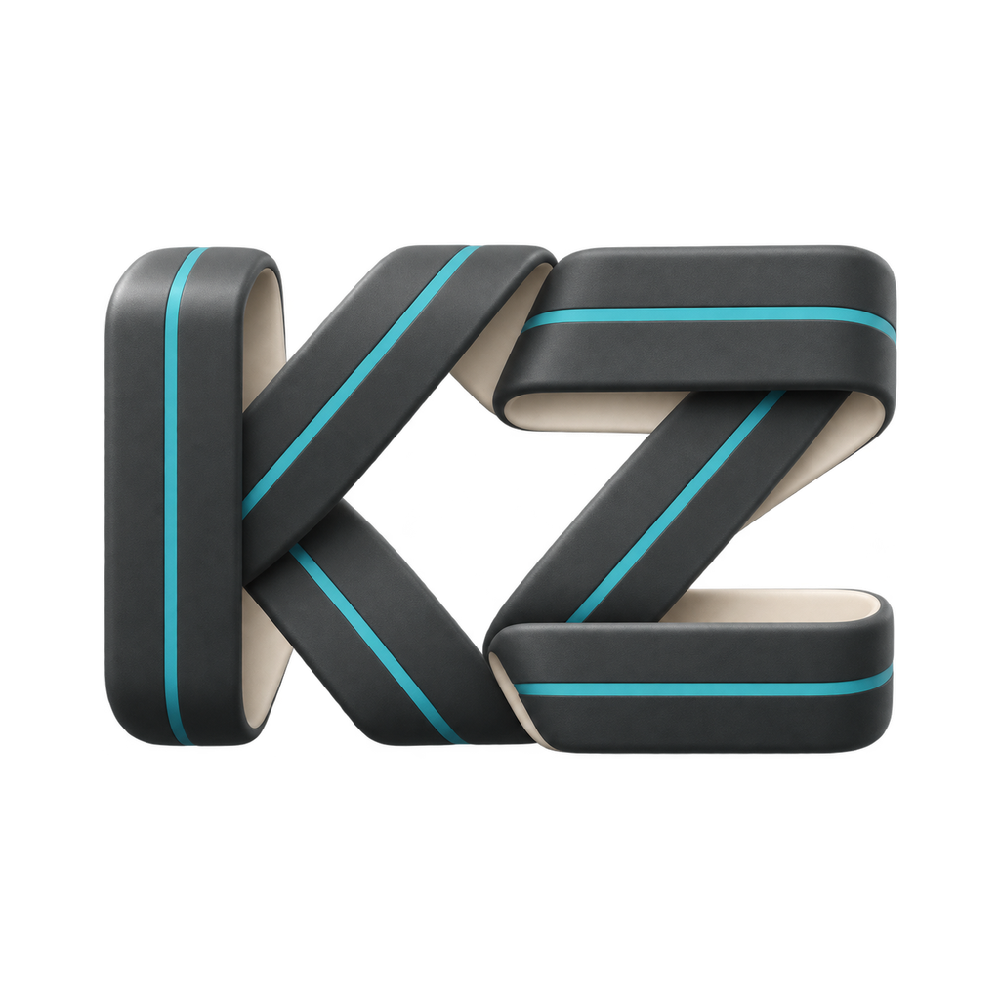
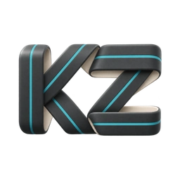
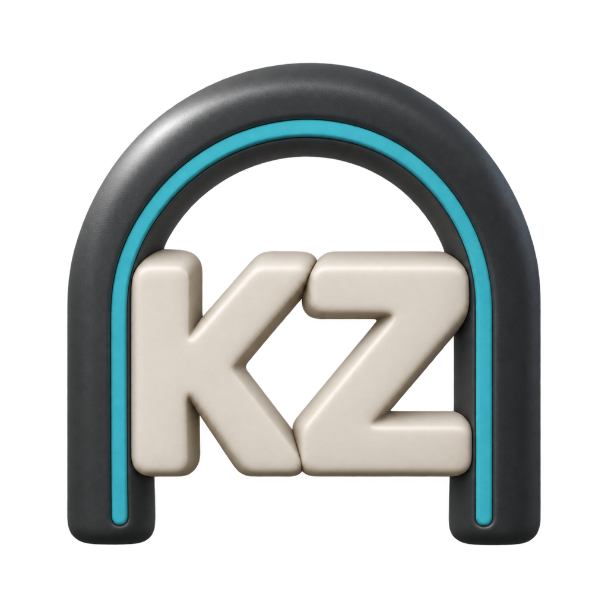
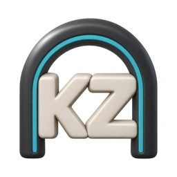
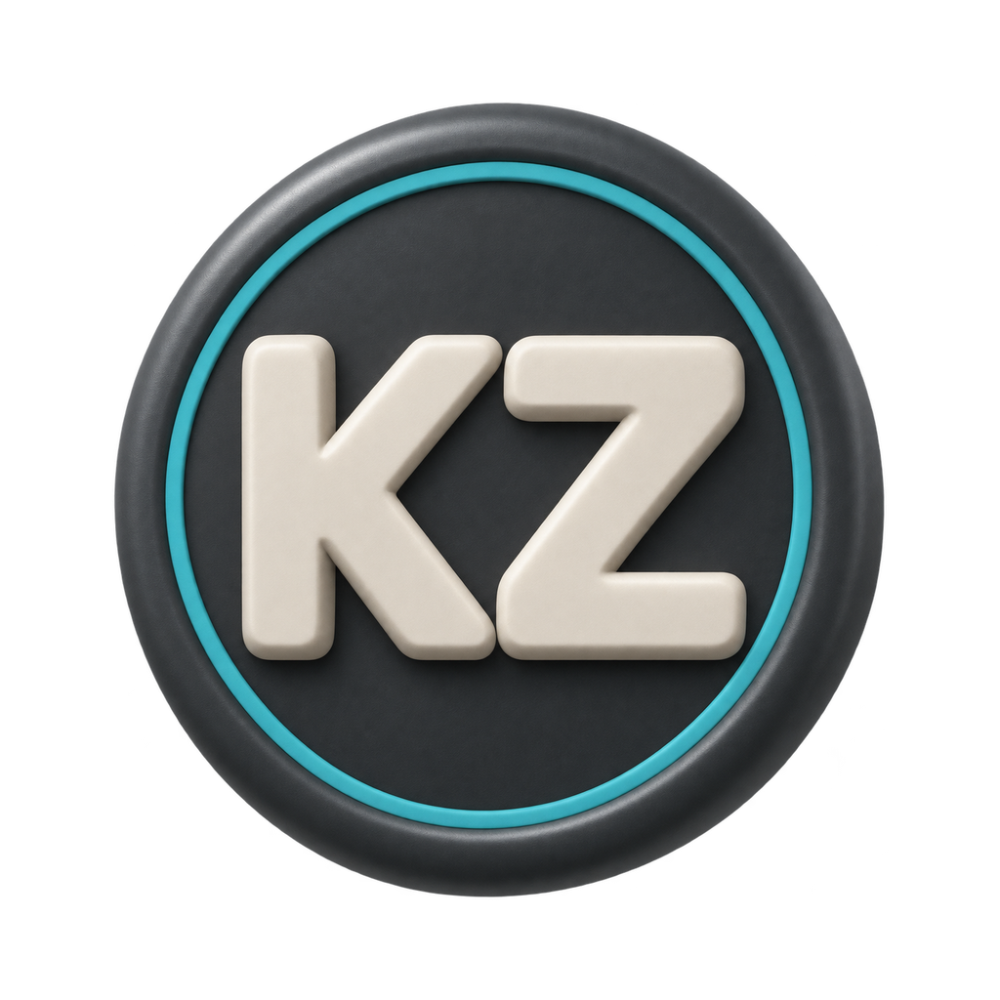
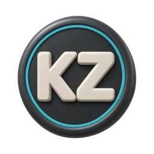

01

Monogramme
Une signature compacte et affirmée, proche de ton KZ actuel.

80 px48 px
32 px
Identité personnelle · Explorations 3D
Graphite mat, ivoire et touches Lagon. Compare les silhouettes, les détails et la lecture en petit format.

Une signature compacte et affirmée, proche de ton KZ actuel.

80 px
Un KZ en matière pliée, plus fluide et en mouvement.

80 px
Une porte ouverte, en écho à la forme signature de ton site.

80 px
Un emblème rond pensé pour une photo de profil ou un avatar.

80 px